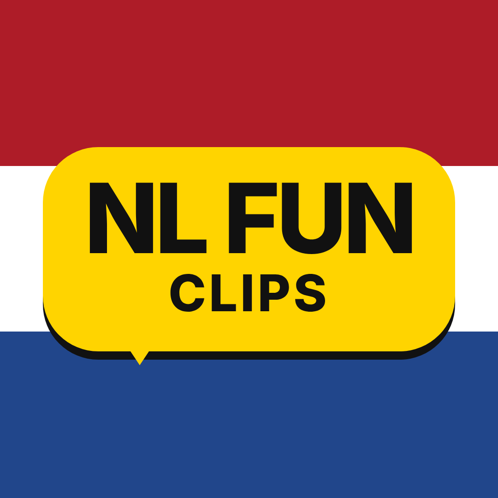

NL Fun Clips
NL Fun Clips is a small Dutch creator channel that shares short, funny clips from Dutch radio, podcasts, shows and events on TikTok, Instagram, YouTube and Facebook.
NL Fun Clips Uploader
The NL Fun Clips Uploader is a private tool used only by the owner of the @nlfunclips TikTok account. After the owner logs in with TikTok, the tool sends finished vertical videos to the owner's TikTok inbox as a draft. The owner then opens TikTok, reviews the draft, adds the caption and chooses to post it. Nothing is posted automatically and no data from other TikTok users is collected.
Contact: NLfunClips@gmail.com